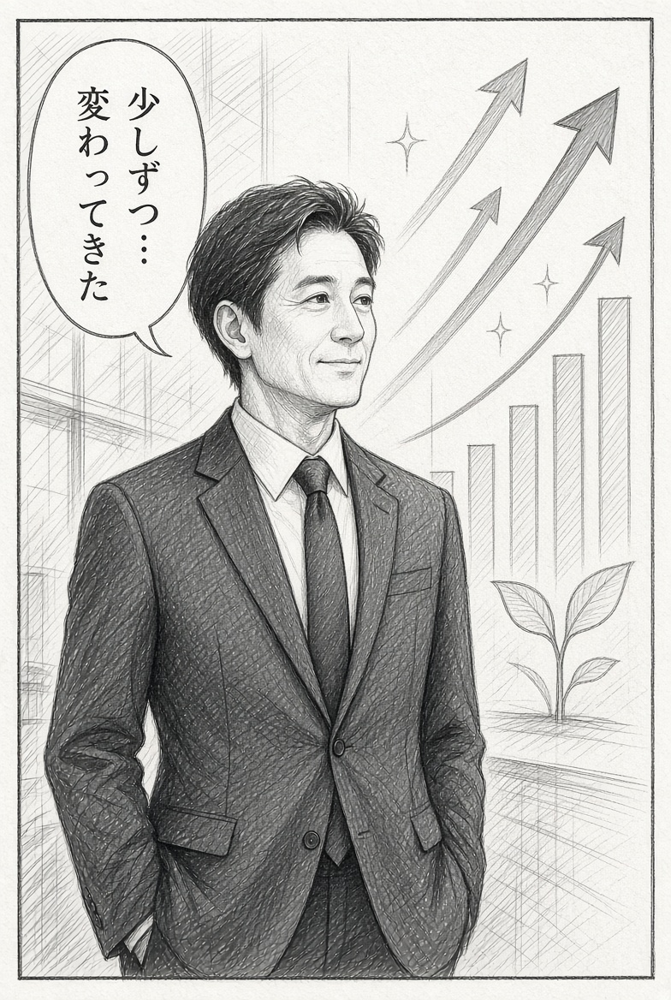
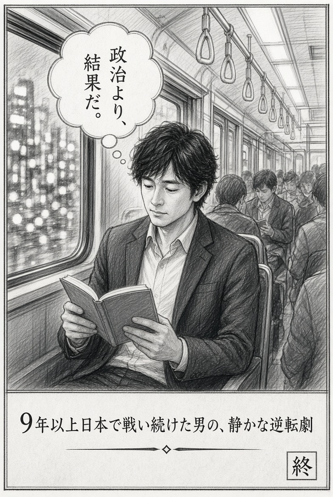
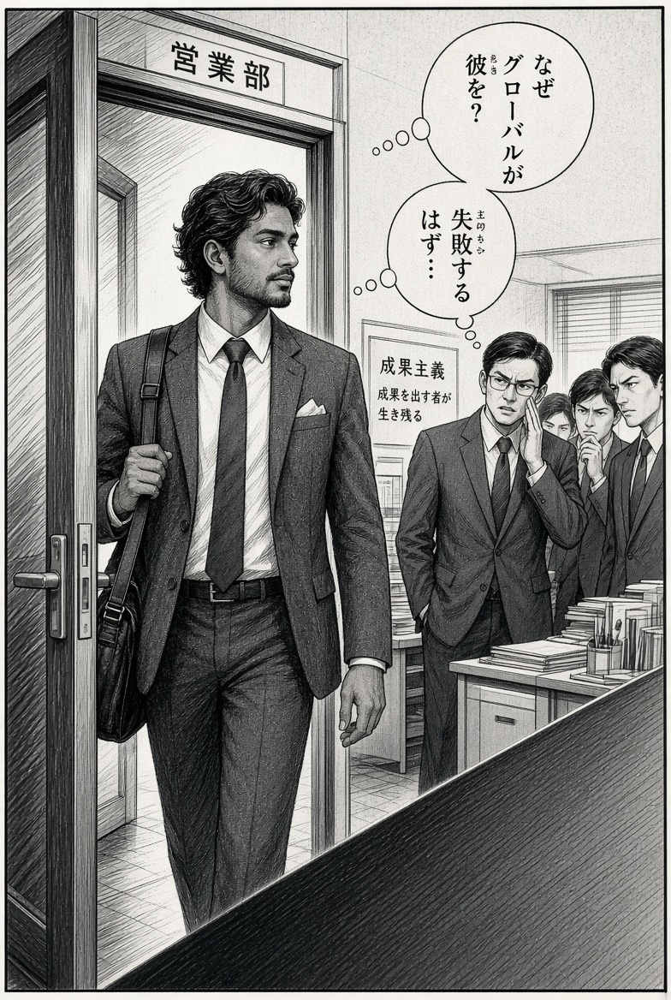

隅っこのブランド
The Brand in the Corner
How to complete this page:
1. Download the 6 manga images from our chat (Panel 1 to Panel 6).
2. Rename them as: panel1.jpg, panel2.jpg, panel3.jpg, panel4.jpg, panel5.jpg, panel6.jpg
3. Put them in the same folder as this HTML file.
4. Upload the whole folder to your website.
Then the real drawings will appear.
1. Download the 6 manga images from our chat (Panel 1 to Panel 6).
2. Rename them as: panel1.jpg, panel2.jpg, panel3.jpg, panel4.jpg, panel5.jpg, panel6.jpg
3. Put them in the same folder as this HTML file.
4. Upload the whole folder to your website.
Then the real drawings will appear.
第1話 表彰の時間 / Chapter 1: Award Time

毎週の全体会議。拍手が鳴り響く。
Every week’s all-hands meeting. Applause fills the room.「おめでとうございます！」「素晴らしい結果です！」
“Congratulations!” “Amazing results!”しかし、会議室の隅っこに、一人だけ静かに立っている部長がいた。
But in the corner, one General Manager stood alone in silence.拍手もない。スポットライトもない。ただの「空気」。
No applause. No spotlight. Just empty air.それが、僕が任されたブランドだった。
That was the brand I was assigned to save.第2話 歓迎されない到着 / Chapter 2: An Unwelcome Arrival

グローバルが僕を送り込んだ。
The global team sent me in.「なぜこの男が来たんだ…」「失敗するはずだろ…」
“Why did they send this guy…?” “He’s going to fail anyway…”ここは「頑張れば認められる」場所ではなかった。
「頑張らせないようにする」場所だった。
It was a place designed to make hard work difficult.
第3話 見えない壁 / Chapter 3: The Invisible Wall

「楽天とAmazonはやるけど…公式サイトは更新しないでね」
“We’ll run the discounts on Rakuten and Amazon… but don’t update the official website.”「スキルがあるなら、ゼロからやってみろ」という、静かな挑戦状だった。
A quiet challenge that said: “If you’re so skilled… start from zero and prove it.”第4話 一人でやる / Chapter 4: Doing It Alone

夜のオフィス。誰もいない。
Night office. No one else around.「一人でやる…！」
“I’ll do it alone…!”空しさはあった。でも、その空しさの中でしか見えない道もあった。
There was emptiness. But inside that emptiness, there was also a path only I could see.第5話 静かな変化 / Chapter 5: Quiet Change

数ヶ月後。あの隅っこの部長が、少しだけ背筋を伸ばしていた。
A few months later. The General Manager who once stood in the corner was standing a little taller.大きな拍手はない。派手な表彰もない。でも結果は嘘をつかない。
No big applause. No flashy awards. But results never lie.最終話 電車の中で / Final Chapter: On the Train

「政治より、結果だ。」
“Results over politics.”派手な逆転劇ではなかった。
ただ、空しさの中で諦めなかっただけの話。
Just a story of someone who refused to give up inside the emptiness.
政治より、結果だ。
Results over politics.
9年以上、日本で戦い続けた男の、静かな逆転劇
The quiet turnaround of a man who kept fighting in Japan for over 9 years
— The Brand in the Corner —
The quiet turnaround of a man who kept fighting in Japan for over 9 years
— The Brand in the Corner —